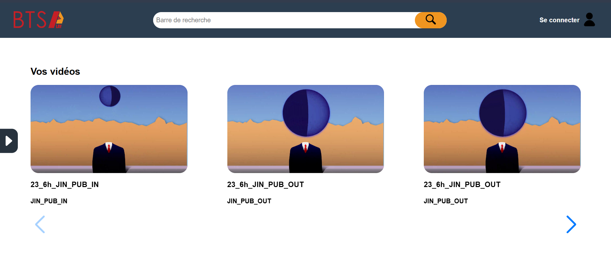
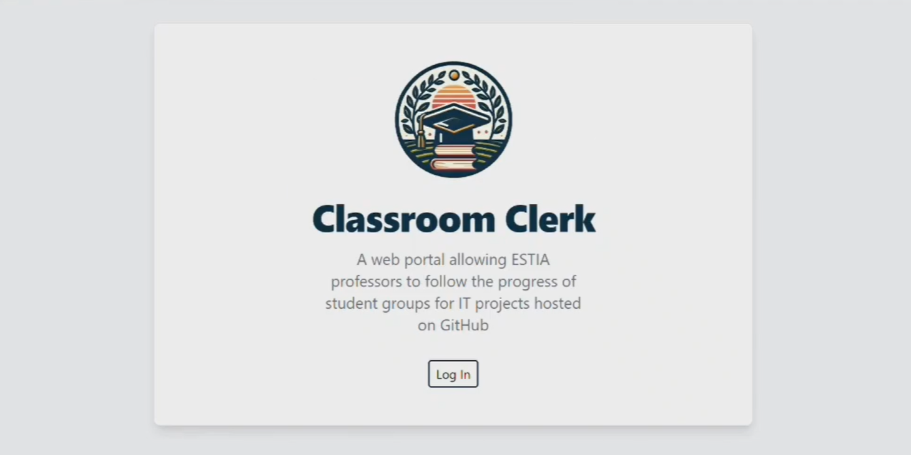
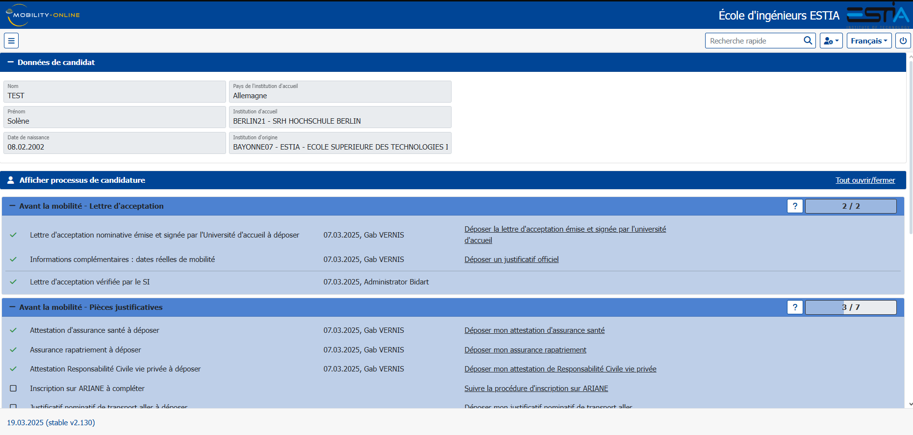
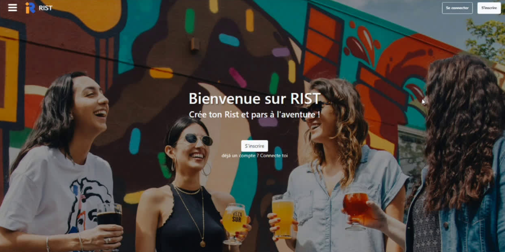

BTSPlay
Description : Application web conçue pour permettre la visualisation rapide et simplifier la gestion des fichiers multimédia des étudiants du BTS Audiovisuel de Biarritz. Ce projet a été réalisé lors de ma 3ᵉ année de BUT.
Compétences : Recueil et analyse des besoins, Conception, Développement, Communication professionnelle, Gestion de projet, Formation des utilisateurs
Technos : PHP, HTML, CSS, JavaScript, SQL

Classroom Clerk
Description : Portail web automatisant la récupération des informations étudiantes via GitHub, avec une fonctionnalité de gestion de to-do list. Ce projet, réalisé lors de mon stage de fin de 2ᵉ année de BUT, visait à explorer de nouvelles technologies.
Compétences : Autonomie, Benchmark, Développement, Création d'API
Technos: Deno, Fresh, OAuth Azure, Git

Mobility Online
Description : Implémentation de l'outil ERP Mobility Online pour gérer les mobilités des étudiants de l'école ESTIA, réalisée dans le cadre de mon stage de fin de 2ᵉ année de BUT.
Compétences : Recueil et analyse des besoins, Gestion de projet, Prise d'initiatives, Tests utilisateurs
Technos : SQL

RIST
Description : Application web pour organiser des activités collaboratives, "Rist", permettant de se rencontrer et partager des expériences tout en respectant un budget. Réalisée en groupe lors de ma 2ᵉ année de BUT.
Compétences : Analyse de marché, Benchmarck, Conception, Développement, Ergonomie UI/UX, Gestion de projet Agile
Technos : PHP, HTML, CSS, JavaScript, SQL, Bootstrap, Figma